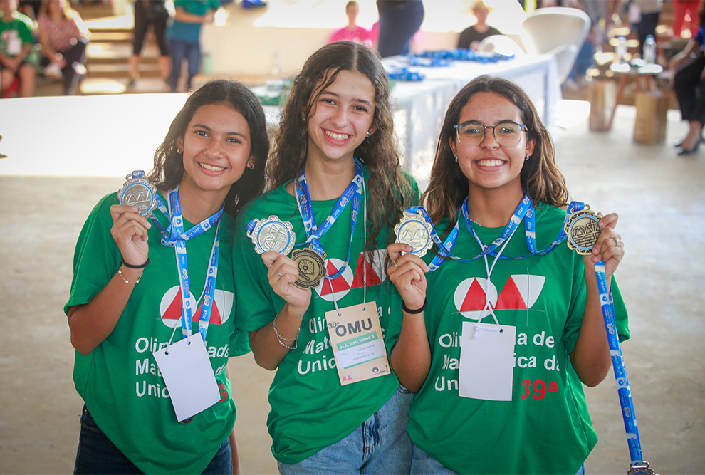

Olimpíada de Matemática realiza fase final com estudantes de 22 estados
Um total de 225 equipes formadas por estudantes de escolas públicas e particulares de 22 estados participam, nos dias 31/8 e 1/9, da fase final da 40ª edição da Olimpíada de Matemática da Unicamp (OMU), um projeto realizado pelo Instituto de Matemática, Estatística e Computação Científica (Imecc) da Universidade.
Autor: Matheus Couto
São Paulo é o estado com o maior número de equipes finalistas: 68 no total. Na sequência estão o Ceará, com 44 grupos, Pernambuco e Minas Gerais, com 28 equipes cada. O Piauí teve nove equipes convocadas, seguido pelo Distrito Federal, com sete, e pelo Espírito Santo, com seis. Com quatro equipes cada um, estão: Goiás, Paraná, Rio de Janeiro e Rio Grande do Norte. Maranhão e Pará possuem três grupos cada, enquanto Bahia, Mato Grosso do Sul, Sergipe e Santa Catarina têm duas equipes cada. Com uma equipe cada, estão: Alagoas, Amazonas, Paraíba, Rio Grande do Sul e Rondônia.
A OMU possui uma proposta original, que difere de outras competições de matemática. A participação ocorre em equipes compostas por três estudantes, além de um professor responsável. O objetivo é que os alunos discutam e, juntos, busquem soluções para os problemas e desafios apresentados.
Neste ano, a OMU registrou 2,8 mil equipes inscritas.
Para Marcelo Firer, membro da comissão organizadora da OMU e professor do Imecc, a proposta é que os participantes respondam às perguntas de forma argumentativa, justifiquem os passos adotados e exponham o seu raciocínio.“A prova da OMU permite que os estudantes resolvam e também formulem problemas, algo fundamental para um matemático. Por isso, cada fase, com uma semana de duração, permite que os integrantes dos grupos discutam os problemas, pesquisem e ajudem-se na busca por referências bibliográficas”, afirma.